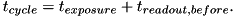
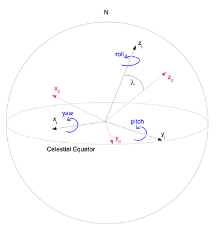
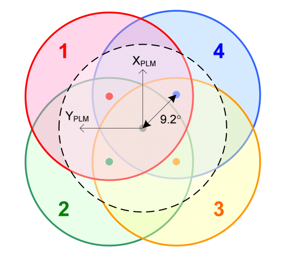
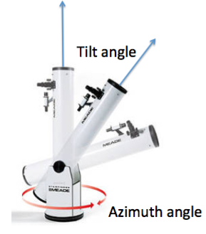
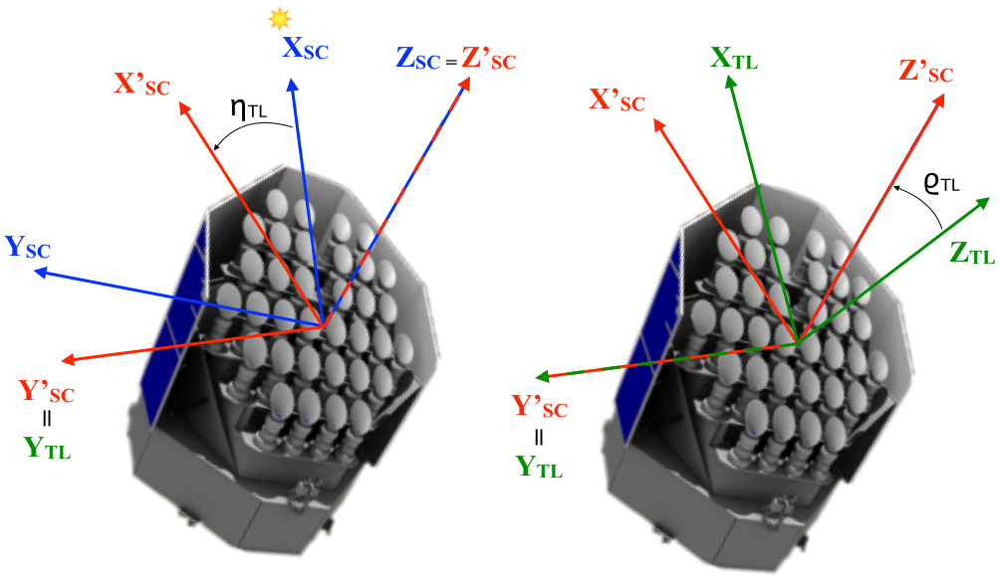
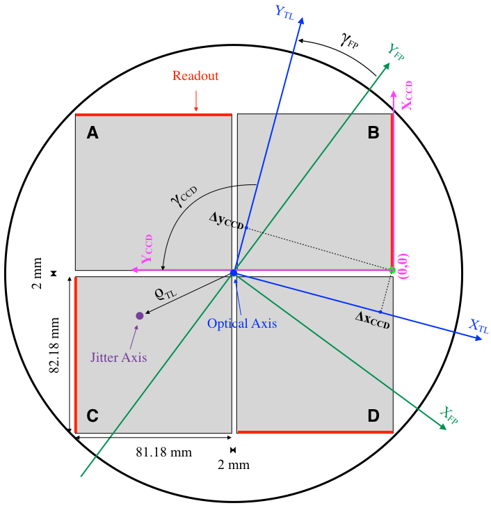
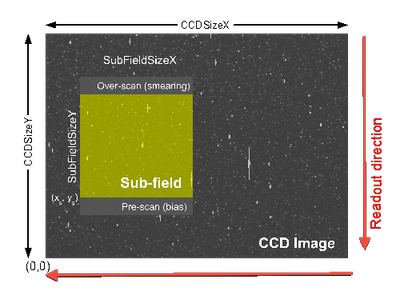

|
PLATO Simulator
3.3
An end-to-end simulator for the Plato mission.
|
|
PLATO Simulator
3.3
An end-to-end simulator for the Plato mission.
|
To configure the Plato Simulator, a large set of configuration parameters is required. The input file format used for PlatoSim3 is YAML, e.g. inputfile.yaml, in the /inputfiles directory. The different blocks in the configuration files reflect their function in the simulation.
We use only a very limited set of the YAML functionality, enough to allow us to provide input files for different parts of the simulator.
Any desired simulation can be obtained by modifying the following input:
In the following sections we describe these parameters for the simulations in detail.
For more details on the reference frames we are using (for the spacecraft, telescope, focal plane, and CCD), radial dependency of the PSF, and rotation angles for platform jitter and telescope drift, please, have a look at technical note PLATO-KUL-PL-TN-0001.
The general configuration parameters are listed in the General block of the configuration file. The structure of this block is the following:
Allowed values: name of an existing directory on disk or environment variable, in the format ENV['PLATO_PROJECT_HOME'].
Full path of the directory in which you have checked out the PlatoSim3 project, or an environment variable, e.g. PLATO_PROJECT_HOME, containing the full path to that directory. In the latter case, you must make sure you have exported this variable before initiating a simulation:
The ObservingParameters block of the configuration file contains the configuration parameters that are specific to the simulated observation and are not specific for the hardware components of the satellite. The structure of this block is the following:
Allowed values: > 0
Total duration of the mission (from BOL till EOL), expressed in years. This will be used to model parameter degradation over time.
Allowed values: 0
Sequential number of the first exposure. Useful for Slurm parallelisation. In that case, long simulations (i.e. with a large number of exposures) will be chopped up into smaller simulations, covering a small number of exposures (see Fig. 1).

Allowed values: > 0
Number of exposures to generate in the simulation.
Allowed values: > 0
Image cycle time, expressed in seconds. This is the sum of the integration time of one exposure and the duration of the readout of one exposure before the next exposure start:

For the normal cameras, the latter is the total readout time; for the fast cameras, it is the time for the frame transfer (i.e. to transfer the content of the upper CCD half to the lower CCD half).
Allowed values: [0, 360]
Right ascension of the pointing, expressed in degrees.
Allowed values: [-90, 90]
Declination of the pointing, expressed in degrees.
Allowed values: > 0
Flux of a star of zero magnitude (  ), expressed in photons s-1 cm-2 in the passband of the magnitudes that are listed in the star catalogue.
), expressed in photons s-1 cm-2 in the passband of the magnitudes that are listed in the star catalogue.
For an exposure of seconds, the measured flux of a star, expressed in photons, is computed from its catalogue magnitude , the effective light-collecting area (in cm2) of the telescope, the transmission efficiency of the optical system, the quantum efficiency of the detector, and the flux per second of a star with zero magnitude ( ) from the equation
where the subscript refers to the wavelength range in which the simulation is performed.
Path to the star catalogue file, relative to the project location.
The Sky block of the configuration file contains all the information that is specific to the sky, i.e. sky background and cosmics. The structure of this block is the following:
Allowed values: < 0 for automatic calculation, 0 to use the input value
In case a positive value is given, the sky background (zodiacal + galactic), is set to the given value, expressed in photons s-1 pixel-1. Note that this value has not been multiplied with the tranmission efficiency yet.
In case a negative value is given, the sky background is computed automatically from tabular values, interpolated to the central coordinates of the sub-field. A constant sky background is assumed for the whole sub-field. Note that for some regions in the sky the automatic computation of the sky background may fail due to the lack of tabulated values. In that case you can set the sky background manually.
Allowed values: "yes" and "no"
Indicates whether or not stellar variability must be included.
Allowed values: only required if stellar variability is to be included (IncludeVariableSources = "yes")
Path to the file, relative to the project location, indicating how the magnitude of the sources varies over time.
Allowed values: "yes" and "no"
Indicates whether or not cosmics must be added to the pixel map.
Allowed values: "yes" and "no"
Indicates whether or not cosmics must be added to the bias register map.
Allowed values: "yes" and "no"
Indicates whether or not cosmics must be added to the smearing map.
The configuration parameters in the Cosmics section are the parameters characterising the cosmic hits. The excess electrons of the cosmic hits are distributed over a trail, characterised by a decay function of the form:
Allowed values: >= 0
Mean cosmic hit rate, expressed in events / cm2 / s. The actual cosmic hit rate for any exposure is sampled randomly from a Poisson distribution with the mean cosmic hit rate as mean. The number of cosmic hits in the simulated sub-field is calculated by multiplying the actual cosmic hit rate with the size of the sub-field (expressed in cm2) and the cycle time (expressed in s).
Interval for the allowed length of the cosmic trails, expressed in pixels.
Interval for the allowed number of electrons comprised in a cosmic hit (that are to be spread over the trail).
The Platform block of the configuration file contains all the information that is specific to the platform of the satellite. The structure of this block is the following:
Allowed values: 0, 90, 180, and 270
Orientation angle of the solar panel, expressed in degrees. This is the roll angle of the platform, which enables orienting the solar panels towards the Sun each quarter, i.e. at the beginning of each quarter the roll angle must be increased by 90 degrees. By convention the roll angle must be set to zero degrees at the beginning of the first quarter.
Note that - to properly account for the re-orientation of the solar panels - simulations must be chopped up in chunks of maximum three months.
Allowed values: "yes" and "no"
Indicates whether pointing variations should be taken into account.
The Plato Simulator can also account for pointing variations of the spacecraft, so-called jitter. A time series of pointing displacement, expressed in Euler angles (yaw, pitch, roll), either has to be provided as a jitter file or will be generated based on the given jitter parameters (see further).
To ensure a realistic modelling of the jitter, the time step of the jitter time series must be smaller than the exposure time.
The configuration of the jitter axes is depicted below. The Euler angles that characterise the jitter are defined w.r.t. to the spacecraft coordinate system (see Fig. 2). The origin of this coordinate system is the geometric centre of the interface between the bottom of the optical bench and the service module. The positive roll axis points towards the operator-given mean payload line-of-sight, given by the equatorial coordinates (RApointing, DecPointing).
The angles are defined such that they increase with a clockwise rotation, when looking along the positive axes. First a roll rotation is done around the axis, then a pitch rotation is done around the rotated axis, and finally a yaw rotation is done around the twice-rotated axis.

Allowed values: "yes" and "no"
Indicates whether the jitter time series must be read from a jitter file ("yes") or the jitter positions must be generated from the jitter parameters ("no"). FromFile, FromRedNoise, or FromNetwork
Allowed values: "FromRedNoise", "FromFile", and "FromNetwork"
Indicates from where to read the jitter:
Allowed values: 0, only required if the jitter positions must be generated from jitter parameters (JitterSource = FromRedNoise)
Standard deviation (expressed in arcsec) of the normal distribution (with zero mean) describing the yaw value from one jitter position to the next one.
Allowed values: 0, only required if the jitter positions must be generated from jitter parameters (JitterSource = FromRedNoise)
Standard deviation (expressed in arcsec) of the normal distribution (with zero mean) describing the pitch value from one jitter position to the next one.
Allowed values: 0, only required if the jitter positions must be generated from jitter parameters (JitterSource = FromRedNoise)
Standard deviation (expressed in arcsec) of the normal distribution (with zero mean) describing the roll value from one jitter position to the next one.
Allowed values: > 0
Timescale of the jitter (i.e. time between two subsequent jitter positions), expressed in seconds.
Path of the jitter file, relative to the project location. This is only required if the jitter positions must be read from a file (JitterSpirce = FromFile).
The Telescope block of the configuration file contains all the information that is specific to the telescope. The structure of this block is the following:
Allowed values: [1, 2, 3, 4, Fast, Custom]
The telescope group identifier can be used to select a telescope group. There are four groups that have a tilt angle of - from the optical axis of the satellite, and one group for the fast camera's which is aligned with the satellite Z-axis. When you specify GroupID=Custom, the tilt angle and azimuth angle below the GroupID in the inputfile are used, otherwise the angles are taken from pre-defined parameters in the CameraGroups block of the configuration file.

Allowed values: > 0
Tilt angle of the telescope, expressed in degrees. This angle, together with the azimuth angle, characterises the orientation of the telescope pointing (i.e. telescope optical axis) w.r.t. the spacecraft/platform pointing.
The tilt angle is the offset between the telescope optical axis and the platform pointing, i.e. the angle between the telescope line-of-sight (positive -axis and the positive -axis (see Figs. 4 and 5).
This parameter is only used when the GroupID=Custom.
Allowed values: Any
Azimuth angle of the telescope, expressed in degrees. This angle, together with the tilt angle, characterises the orientation of the telescope pointing (i.e. telescope optical axis) w.r.t. the spacecraft/platform pointing.
The azimuth angle is the position angle of the rotation of the telescope around the positive -axis (see Figs. 3 and 4).
This parameter is only used when the GroupID=Custom.

Allowed values: > 0
Light-collecting area of one telescope, expressed in cm2.
The transmission efficiency of the optical system, considering the passband and the spectral energy distribution of the stars, given the Fluxm0 parameter and the magnitudes in the star catalogue degrades linearly over the mission lifetime.
Allowed values: [0,1]
Tranmission efficiency of the optical system, considering the passband and spectral energy distribution of the stars, given the Fluxm0 parameter and the magnitudes in the star catalogue, at the beginning of the mission (beginning-of-life). This parameter is used to model the (linear) degradation in transmission efficiency over the mission lifetime.
Allowed values: [0,1]
Tranmission efficiency of the optical system, considering the passband and spectral energy distribution of the stars, given the Fluxm0 parameter and the magnitudes in the star catalogue, at the end of the mission (end-of-life). This parameter is used to model the (linear) degradation in transmission efficiency over the mission lifetime.
Allowed values: "yes" or "no"
Indicates whether the thermo-elastic drift of the telescope (w.r.t. the platform) should be taken into account.
Similar to the UseJitter parameter for the platform jitter.
The Plato Simulator can also account for the thermo-elastic drift, of the telescope (w.r.t. the platform). A time series of displacement, expressed in Euler angles (yaw, pitch, roll), either has to be provided as a drift file or will be generated based on the given drift parameters (see further).
The Euler angles (yaw, pitch, roll) are defined as the rotation angles around the , and axes (see Fig. 5), such that the anges increase with a clockwise rotation when looking along the positive axes.

Allowed values: "yes" or "no"
Indicates whether the thermo-elastic drift of the telescope (w.r.t. the platform) should be taken into account.
Similar to the UseJitterFromFile parameter for the platform jitter.
Allowed values: 0
Standard deviation (expressed in arcsec) of the normal distribution (with zero mean) describing the yaw value from one thermo-elastic drift position to the next one.
Similar to the JitterYawRms parameter for the platform jitter.
Allowed values: 0
Standard deviation (expressed in arcsec) of the normal distribution (with zero mean) describing the pitch value from one thermo-elastic drift position to the next one.
Similar to the JitterPitchRms parameter for the platform jitter.
Allowed values: 0
Standard deviation (expressed in arcsec) of the normal distribution (with zero mean) describing the roll value from one thermo-elastic drift position to the next one.
Similar to the JitterRollRms parameter for the platform jitter.
Allowed values: > 0
Timescale of the thermo-elastic drift (i.e. time between two subsequent drift positions), expressed in seconds.
Path of the drift file, relative to the project location. This is only required if the drift positions must be read from a file (UseDriftFromFile = yes).
The Camera block of the configuration file contains all the information that is specific to the camera. The structure of this block is the following:
The orientation of the focal plane can either be kept constant over the simulations or vary, according to the values in a file provided by the user.
For an angle of 0°, the y-axis of the CCD (with an orientation angle of 0°) points towards the North. A positive angle corresponds to a counterclockwise rotation. Have a look at Fig. 6 for more details.

Allowed values: "ConstantValue" and "FromFile".
Indicates whether the value of the focal-plane orientation angle must be constant or is allowed to vary over time, according to the values in a user-provided file.
Allowed values: Any
Orientation angle of the focal plane, expressed in degrees, in case the focal-plane orientation must remain the same over the duration of the whole simulation (FocalPlaneOrientation: Source = ConstantValue).
Path of the file with the focal-plane orientation angle as it varies over time, in case the focal-plane orientation angle must be read from a file (FocalPlaneOrientation: Source = FromFile).
Allowed values: > 0
Nominal plate scale in arcsec / micron. This value affects the visible FOV of the CCD.
The focal length can either be kept constant over the simulations or vary, according to the values in a file provided by the user.
Allowed values: "ConstantValue" and "FromFile".
Indicates whether the value of the focal length must be constant or is allowed to vary over time, according to the values in a user-provided file.
Allowed values: > 0
Focal length as recovered from the Zemax model, expressed in m.
Orientation angle of the focal plane, expressed in degrees, in case the focal length must remain the same over the duration of the whole simulation (FocalLength: Source = ConstantValue).
Path of the file with the focal plane as it varies over time, in case the focal length must be read from a file (FocalLength: Source = FromFile).
Allowed values: > 0
FWHM of the throughput passband, expressed in nm.
Allowed values: > 0
Central wavelength of the throughput passband, expressed in nm.
Allowed values: "yes" and "no"
Indicates whether or not the field distortion must be taken into account.
Allowed values: "yes" and "no"
Indicates whether or not to apply the aberration correction to all star positions in the star catalogue.
The calculation of the aberration correction is an approximation based on a circular earth orbit around the sun and does not take the Lissajous orbit of the satellite around L2 into account. We do calculate the aberration, however, which takes into account the aberration correction done for the spacecraft pointing.
Allowed values: "differential" and "absolute"
Indicates whether to apply either differential or absolute aberration correction (if (IncludeAbberationCorrection = yes).
The field distortion is represented by either a 1D or a 2D polynomial, the coefficients of which must be kept constant over the simulations or vary, according to the values in a file provided by the user.
Allowed values: "Polynomial1D"
Indicates that the field distortion is calculated by means of a 1D polynomial.
Assumed is that the distortion is radial and only depends on the radial distance r in the focal plane. This type of distortion can be modelled with a pincushion or barrel distortion:
Indicates whether the coefficients for the polynomial describing the field distortion must be constant or are allowed to vary over time, according to the values in a user-provided file.
Coefficients for the 1D polynomial that converts the normalised undistorted pixel coordinates (i.e. pixel coordinates divided by the focal length in pixels) to the distortion, expressed in normalised pixel coordinates, in case the coefficients must remain the same over the duration of the whole simulation (FieldDistortion: Source = ConstantValue).
Inverse coefficients for the 1D polynomial that converts the normalised distorted pixel coordinates (i.e. pixel coordinates divided by the focal length in pixels) to the (negative) distortion, expressed in normalised pixel coordinates, in case the inverse coefficients must remain the same over the duration of the whole simulation (FieldDistortion: Source = ConstantValue).
Coefficients for inverse polynomial of the polynomial describing the field distortion, in case the coefficients must be read from a file (FieldDistortion: Source = FromFile).
Inverse coefficients for inverse polynomial of the polynomial describing the field distortion, in case the coefficients must be read from a file (FieldDistortion: Source = ConstantValue).
The PSF block of the configuration file contains all the information that is specific to the PSF. The structure of this block is the following:
Allowed values: "MappedGaussian", "MappedFromFile", "AnalyticGaussian", and "AnalyticNonGaussian
Indicates whether to use a Gaussian PSF, to read the PSF from an HDF5 file, or to use an analytical model (Gaussian or non-Gaussian):
The PSF is a circular Gaussian, the size of which does not change over the FOV.
Allowed values: > 0, only required if a Gaussian PSF must be used (psfModel = MappedGaussian)
Width ( ) of the two-dimensional Gaussian PSF, expressed in pixels. This Gaussian PSF does not vary in size over the FOV.
Allowed values: > 0, only required if a Gaussian PSF with a fixed size over the FOV must be used (Model = MappedGaussian)
Number of pixels (in both directions) for which the Gaussian PSF must be generated.
Allowed values: 1 / SubPixels
Charge diffusion has been modelled by a convolution with a Gaussian diffusion kernel, of which this is the standard deviation.
Allowed values: "yes" and "no"
Indicates whether or not to include charge diffusion.
Allowed values: "yes" and "no"
Indicates whether or not to include jitter smoothing. This is implemented as charge diffusion with a kernel width of 0.5 sub-pixels and alleviates the problem of jitter discontinuities. Only applicable in case IncludeChargeDiffusion = False.
The PSF is selected from an HDF5 file with pre-computed PSFs, based on the angular distance to the optical axis.
Allowed values: only required if a pre-computed PSF must be used (psfModel = MappedFromFile)
Path to the file, relative to the project location, holding the location independent pre-computed PSF.
Allowed values: -1 for automatic calculation, 0 to use the input value; only required if a pre-computed PSF must be used (Model = MappedFromFile)
In case a positive value is given the input value will be used for the angular distance to the optical axis.
In case a negative value is given, the angular distance to the optical axis will be calculated automatically.
Allowed values: Any, only required if a pre-computed PSF must be used (Model = MappedFromFile)
Arbitrary rotation angle of the PSF, expressed in degrees and measured counterclockwise.
Allowed values: > 0, only required if a pre-computed PSF must be used (Model = MappedFromFile)
Number of pixels (in both directions) for which the PSF was generated.
Allowed values: 1 / SubPixels
Charge diffusion has been modelled by a convolution with a Gaussian diffusion kernel, of which this is the standard deviation.
Allowed values: "yes" and "no"
Indicates whether or not to include charge diffusion.
Allowed values: "yes" and "no"
Indicates whether or not to include jitter smoothing. This is implemented as charge diffusion with a kernel width of 0.5 sub-pixels and alleviates the problem of jitter discontinuities. Only applicable in case IncludeChargeDiffusion = False.
The PSF is an elongated Gaussian (the symmetry axes being parallel to the x- and y-axis), for which the width and the height are given at the centre of the FOV and at 18 degrees from the optical axis.
Allowed values: > 0, only required if a analytic Gaussian PSF must be used (Model = AnalyticGaussian)
Standard deviation of the analytical Gaussian PSF in the x- and y-direction at the optical axis, expressed in pixels.
Allowed values: > 0, only required if a analytic Gaussian PSF must be used (Model = AnalyticGaussian)
Standard deviation of the analytical PSF in the x-direction at 18 degrees from the optical axis, expressed in pixels.
Allowed values: > 0, only required if a analytic Gaussian PSF must be used (Model = AnalyticGaussian)
Standard deviation of the analytical PSF in the y-direction at 18 degrees from the optical axis, expressed in pixels.
The PSF is an analytical non-Gaussian model, the parameters of which are stored in a separate file.
Allowed values: only required if a analytic non-Gaussian PSF must be used (Model = AnalyticNonGaussian)
Path to the file, relative to the project location, holding the parameters characterising the analytical model.
The width of the analytic non-Gaussian PSF, equal to sigma for a Gaussian PSF (expressed in pixels), can either be kept constant over the simulations or vary, according to the values in a file provided by the user.
Allowed values: "ConstantValue" or "FromFile", only required if a analytic non-Gaussian PSF must be used (Model = AnalyticNonGaussian)
Indicates whether the value of the width of the analytic non-Gaussian PSF must be constant or is allowed to vary over time, according to the values in a user-provided file.
Allowed values: > 0, only required if a analytic non-Gaussian PSF must be used (Model = AnalyticNonGaussian) and [Sigma: Source] = ConstantValue
Width of the analytic non-Gaussian PSF, equal to sigma for a Gaussian PSF (expressed in pixels), in case it must remain the same over the duration of the whole simulation ([Sigma: Source] = ConstantValue).
Allowed values: only required if a analytic non-Gaussian PSF must be used (Model = AnalyticNonGaussian) and [Sigma: Source] = ConstantValue
Path to the file, relative to the project location, with the width of the analytic non-Gaussian PSF, in case it must be read from a file ([Sigma: Source] = FromFile).
Charge diffusion can be switched on/off by reading the appropriate parameter file. One will be provided with the parameters with charge diffusion and one without.
The FEE block of the configuration file contains all the information that is specific to the front-end electronics (FEE). The structure of this block is the following:
Allowed values: > 0
Nominal operating temperature of the FEE, expressed in Kelvin.
Allowed values:"Nominal" or "FromFile"
Indicates whether the temperature of the FEE should be fixed at the nominal operating temperature or temperature variations should be read from a file.
Path to the file, relative to the project location, holding the location of the file with the temperature variations of the FEE.
Allowed values: 0
Mean readout noise of the FEE, expressed in e-/pixel. This is the same for both ADCs.
The actual gain for the FEE will be different for both ADCs. A reference value is given for ADC1 and ADC2, and the difference should not exceed the specified allowed difference.
Allowed values: > 0
Reference value of the gain of ACD1 of the FEE at its nominal operating temperature, expressed in ADU/µV.
Allowed values: > 0
Reference value of the gain of ACD2 of the FEE at its nominal operating temperature, expressed in ADU/µV.
Allowed values: [0,100]
Percentage of the reference values for the gain of ADC1 and ADC2 that indicates the maximum allowed difference between these gain values.
Allowed values: Any
Change in gain (for both ADCs) with temperature deviations from the nominal operating temperature, expressed in ADU/µV/K.
The electronic offset or bias level is added to the digital signal in order to avoid negative readout values. The electronic offset can be measured in a pre-scan strip, which essentially consists of a few additional rows of the CCD. These rows only contain the electronic offset and the readout noise. This pre-scan strip consisting of NumPreScanRows rows will be stored in the output file. This is the same for both ADCs.
Allowed values: 0
Electronic offset or bias level at the nominal operating temperature of the FEE, expressed in ADU.
Allowed values: Any
Change in electronic offset (for both ADCs) with temperature deviations from the nominal operating temperature, expressed in ADU/pixel/K.
Over-/undershoot has been noticed in F-FEE measurements. Looking at the content of a readout register at any given time, the charges in any pixels will affect the next pixels in the readout register, further away from the readout register, e.g. at a distance . For a difference in signal between two such pixels, , the induced over-/undershoot will be
Both detector halves are treated independently.
Allowed values: > 0
Parameter in the formula above.
Allowed values: > 0
Parameter in the formula above.
Allowed values: > 0
Parameter in the formula above.
Allowed values: > 0
Maximum distance over which a pixel in the readout register exerts over-/undershoot on other pixels in the readout register, further away from the readout electronics.
Allowed values: "yes" and "no"
Indicates whether or not to include F-FEE over-/undershoot. Only applicable in case GroupID = Fast.
The CCD block of the configuration file contains all the information that is specific to the CCD. The structure of this block is the following:
Allowed values: [1, 2, 3, 4, Custom]
The CCD position can be used to select a specific pre-defined CCD or a custom one.
The pre-defined CCD positions are shown in the figures below.


Note that we now use 1, 2, 3, and 4 rather than A, B, C, D, for the normal cameras as well as for the fast ones.
| In the past | Now |
|---|---|
| A | 3 |
| B | 2 |
| C | 4 |
| D | 1 |
When you specify Position=Custom, the origin offset (OriginOffsetX and OriginOffsetY), the orientation, number of rows and columns, and the first exposed row of the CCD are read from the configuration parameters in the CCD block.
In case a pre-defined position is used, these configuration parameters are read from the CCDPositions block (see below).
Allowed values: Any
Offset of the CCD origin from the centre of the optical plane (i.e. the intersection of the optical axis with the focal plane) in the x-direction, expressed in mm. The origin of the CCD is defined as the point where the readout register is located. See Fig. 6 for more details ( ).
This parameter is only used when the Position=Custom.
Allowed values: Any
Offset of the CCD origin from the centre of the optical plane (i.e. the intersection of the optical axis with the focal plane) in the y-direction, expressed in mm. The origin of the CCD is defined as the point where the readout register is located. See Fig. 6 for more details ( ).
This parameter is only used when the Position=Custom.
Allowed values: Any
Orientation angle of the CCD w.r.t. the orientation of the focal plane, measured counterclockwise and expressed in degrees. This rotation is performed around the offset origin of the CCD. See Fig. 6 for more details ( ).
This parameter is only used when the Position=Custom.
Allowed values: > 0
Number of pixels of the CCD in the x-direction (i.e. number of columns).
This parameter is only used when the Position=Custom.
Allowed values: > 0
Number of pixels of the CCD in the y-direction (i.e. number of rows).
This parameter is only used when the Position=Custom.
Allowed values: > 0
Row index of the first row in the CCD that is illuminated (the row closest to the readout register is row 0).
This parameter is only used when the Position=Custom.
Allowed values: > 0
Time shift between the readout of the CCDs [s]. Will only be used if Position=Custom.
Allowed values: > 0
Nominal pixel size, expressed in micron.
The brighter-fatter effect (BFE) is modelled following the method proposed in Guyonnet et al. 2015. The model from Eq. (18) has been adapted to
Allowed values: > 0
Maximum distance in the row and column direction for a pixel (i,j) from considered pixel (0,0) to be considered in Eq. (11) in Guyonnet et al. 2015.
Allowed values: > 0
Scalar in the model for .
Allowed values: > 0
Parameter in the model for , assuming  is expressed in pixels.
is expressed in pixels.
Parameter in the model for . This is a reference charge, expressed in electrons.
The actual gain for the CCD will be different for both detector halves. A reference value is given for both halves, and the difference should not exceed the specified allowed difference.
Allowed values: > 0
Reference value of the gain of the left- and right-hand side of the CCD at its nominal operating temperature, expressed in µV/e-.
Allowed values: > 0
Reference value of the gain of ACD2 of the FEE at its nominal operating temperature, expressed in µV/e-.
Allowed values: [0,100]
Percentage of the reference values for the gain of the left- and right-hand side of the CCD that indicates the maximum allowed difference between these gain values.
Allowed values: Any
Change in gain (for both CCD halves) with temperature deviations from the nominal operating temperature, expressed in µV/e-/K.
Quantum efficiency is the ratio of the number of collected electrons to the number of incident photons, considering the passband and the spectral energy distribution of the stars given the Fluxm0 parameter and the magnitude of the stars in the star catalogue.
Allowed values: [0,1]
Mean throughput efficiency due to quantum efficiency (i.e. the mean over all pixels of one detector).
Allowed values: > 0
Mean efficiency caused by the angle dependency of the quantum efficiency.
Optical elements induce a preferred direction for the propagation of light. This effect is called polarisation.
Allowed values: [0,1]
Expected value of the throughput efficiency due to polarisation (i.e. the mean over all pixels of one detector). Currently no information on the angle dependency of polarisation is available and hence this value will be used for the whole FOV, until further notice.
The overall vignetting can be computed by summing the contributions of natural an mechanical vignetting.
Natural vignetting is the brightness attenuation towards the edges of the FOV, introduced by the view factor of the entrance pupil. Mechanical vignetting is due to the introduced downsizing of the lenses clear apertures.
Allowed values: [0,1]
Expected value of the throughput efficiency due to natural vignetting (i.e. the mean over all pixels of one detector).
Allowed values: > 0
Radius of the FOV, expressed in degrees. Beyond this radius all incoming flux (apart from the cosmic hits) is shielded off.
The contribution to contamination is two-fold:
Allowed values: [0,1]
Throughput efficiency due to particulate contamination.
Allowed values: [0,1]
Throughput efficiency due to molecular contamination.
Dark signal is the relatively small electric current that is generated in the CCD when no outside radiation is entering the device.
Allowed values: > 0
Dark current, expressed in e- / s. This is the nominal value of the dark signal.
Allowed values: [0,100]
Dark signal non-uniformity, expressed as a percentage of the dark current. This is the systematic (fixed-pattern) deviation of a pixel's dark current from its nominal value.
Allowed values: 0
Temperature stability of the dark current, expressed in in e- / K / s.
Allowed values: > 0
Full-well saturation limit of a single CCD pixel, expressed in e- / pixel. If a pixels receives more electrons than its full-well saturation limit, the additional electrons flow evenly distributed in positive and negative charge-transfer direction, a phenomenon called blooming. The electrons reaching the edge of the CCD will not be detected..
Allowed values: > 0
Digital saturation limit of the CCD to which pixel values are topped off, expressed in ADU / pixel. This value depends on the A/D convertor of the detector. For a 16-bit convertor, the digital saturation limit is 65536 ADU.
The gain of the front-end electronics and detector should be such that the full-well saturation results in values below the digital saturation limit.
Allowed values: 0
Mean readout noise of the detector, expressed in e-.
Readout noise occurs due to the imperfect nature of the CCD amplifiers. When the electrons are transferred to the amplifier, the induced voltage is measured. However, this measurement is not perfect, but gives a value which is on average too high by an amount of the readout noise, with the squareroot of the readout noise as standard deviation (we add the readout noise of the FEE and the CCD in quadrature).
Allowed values: ≥ 0
Time required to shift the content of the readout register over one pixel, towards the output node. This is not only relevant for the image area but also for the serial pre-scan (i.e. bias register map) and the serial over-scan (which has not been implemented).
Allowed values: 0
Time required to shift the charges one row down (towards the readout register) in case the readout register will be read out by the FEE.
The difference with ParallelTransferTimeFast is due to two delay parameters recommended by Teledyne e2v for clock settling. Settling times are to ensure one clock has reached its low level before another clock starts to rise. It ensures good charge transfer, as without it you could cause charge to be lost. This is particularly the case when dealing with the (parallel) transfer into the readout register, as the rise and fall times of the image clocks are a lot slower than those of the register clocks.
Allowed values: 0
Time required to shift the charges one row down (towards the readout register) in case the readout register will not be read out by the FEE. In that case clock settling is not needed, hence the difference with ParallelTransferTime.
Allowed values: 0
Local PRNU (Pixel Response Non-Uniformity), defined as the standard deviation in the signal level ( ), divided by the mean signal ( ):
Because of detector defects, electrons can get trapped in the readout process. The trapped charge ends up getting dissociated from its original pixel and eventually gets released into another pixel. The result is that the original image gets smeared out in the direction away from the readout amplifier (visible in the appearance of "charge trails"). This is known as imperfect CTE (Charge-Transfer Efficiency) or alternatively as CTI (Charge-Transfer Inefficiency).
The charge trails impact photometry, noise, and astrometry of sources. CTI removes flux from the central pixel and thus degrades the expected S/N for an observation. CTI trails bias measurements of source along the trail direction, which can severely impact high-precision astrometry.
Allowed values: "Simple" and "Short2013"
PlatoSim3 offers two implementation of the CTI:
The simple implementation ("Simple") assumes that for each row transfer (in the direction of the readout register) a fraction of the charge is not transferred to the next row, but stays behind. It will be released by later row transfers.
Allowed values: [0,1]
Mean charge-transfer efficiency (CTE) of the detector. The fraction of the charge that is successfully transferred from one row to the next row is expressed by this parameter.
A more sophisticated implementation ("Short2013") is based on Short et al., MNRAS 430, 3078-3085 (2013), in which only parallel readout is taken into account.
Exponent in Eq. (1) of Short et al. 2013 describing the relationship between the volume of the charge cloud ( ), the number of electrons in a pixel ( ), the full-well capacity in electrons ( ), and the assumed maximum geometrical volume that electrons can occupy within a pixel ( ):
Allowed values: 0
Temperature that is used to calculated the thermal velocity of the electrons:
where is the Boltzmann constant and is the effective electron mass in silicon, which we approximate by half the free electron rest mass.
Allowed values: > 0
Number of trap species that is used in the CTI model by Short et al. 2013.
Allowed values: Array holding one non-negative entry per trap species.
Array holding the trap density for each of the considered trap species, expressed in number of traps per pixel. This is used to calculate the -value in Eq. (22) of Short et al. 2013.
Allowed values: Array holding one non-negative entry per trap species.
Array holding the trap capture cross-section  for each of the considered trap species, expressed in m2. This is used to calculated the -value in Eq. (22) of Short et al. 2013. In this formula, the charge transfer time is used as value for .
for each of the considered trap species, expressed in m2. This is used to calculated the -value in Eq. (22) of Short et al. 2013. In this formula, the charge transfer time is used as value for .
Allowed values: Array holding one non-negative entry per trap species.
Array holding the trap release time constants for each of the considered trap species, expressed in seconds.
Allowed values: > 0
Nominal operating temperature of the CCD, expressed in Kelvin.
Allowed values:"Nominal" or "FromFile"
Indicates whether the temperature of the CCD should be fixed at the nominal operating temperature or temperature variations should be read from a file.
Path to the file, relative to the project location, holding the location of the file with the temperature variations of the CCD.
Allowed values: "yes" and "no"
Indicates whether or not to include the flatfield.
Allowed values: "yes" and "no"
Indicates whether or not to include dark signal.
Allowed values: "yes" and "no"
Indicates whether or not to include photon noise.
Allowed values: "yes" and "no"
Indicates whether or not to include readout noise.
Allowed values: "yes" and "no"
Indicates whether or not to include CTI effects.
Allowed values: "yes" and "no"
Indicates whether or not to include open-shutter smearing effects.
Allowed values: "yes" and "no"
Indicates whether or not to include brightness attenuation towards the edge of the FOV due to natural vignetting.
Allowed values: "yes" and "no"
Whether or not to include blockage of incoming radiation due to mechanical vignetting.
Allowed values: "yes" and "no"
Indicates whether or not to include loss of throughput efficiency due to polarisation.
Allowed values: "yes" and "no"
Indicates whether or not to include loss of throughput efficiency due to particulate contamination.
Allowed values: "yes" and "no"
Indicates whether or not to include loss of throughput efficiency due to molecular contamination.
Allowed values: "yes" and "no"
Indicates whether or not to include loss of throughput efficiency due to quantum efficiency.
Allowed values: "yes" and "no"
Indicates whether or not the sub-pixel map must be convolved with the PSF. This applies only to the Gaussian and the pre-computed PSF. When using the analytic PSF, the PSF is always applied (irrespective of the value of this configuration parameter)!
Allowed values: "yes" and "no"
Indicates whether or not to apply full-well saturation.
Allowed values: "yes" and "no"
Indicates whether or not to apply digital saturation.
Allowed values: "yes" and "no"
Indicates whether or not to apply quantisation. This includes:
Allowed values: "yes" and "no"
Indicates whether or not the sub-pixel images must be written to the HDF5-file. Use this for a limited number of exposures, as it takes a lot of space.
The SubField block of the configuration file contains all the information about the sub-field of the CCD that is modelled by the simulation. The structure of this block is the following:

Allowed values: > 0
Row of the origin of the sub-field in the detector, expressed in pixels. See Fig. 9 for more details ( ).
Allowed values: > 0
Column of the origin of the sub-field in the detector, expressed in pixels. See Fig. 9 for more details ( ).
Allowed values: 8
Number of columns in the sub-field, expressed in pixels.
Allowed values: 8
Number of rows in the sub-field, expressed in pixels.
Allowed values: 0
Number of rows in the pre-scan strip (see Fig. 9), expressed in normal pixel units. There are two such strips, on either side of the detector image, and they contain the electronic offset and readout noise of the adjacent detector half.
This parameter is configurable (and not fixed to the number of rows in the detector or the sub-field), because we want (1) to avoid the bias maps to take up too much space in the output file and (2) be able to do accurate bias correction for the photometric reduction (thus want to avoid small noisy bias maps).
Allowed values: 0
Number of columns in the pre-scan strip (see Fig. 9), expressed in normal pixel units. There are two such strips, on either side of the detector image, and they contain the electronic offset and readout noise of the adjacent detector half.
Allowed values: 0
Number of rows in the over-scan strip (see Fig. 9), expressed in normal pixel units. This strip is located at the top of the sub-field that is modelled in detail and contains the star smearing due to the absence of a shutter. This flux in this strip is also affected by the electronic offset, readout noise, and shot noise. Not included are the PRNU, cosmic hits, and charge-transfer efficiency (CTE).
Allowed values: power of 2 ( 128)
Number of sub-pixels per pixel in both directions.
If you want a pixel of 256 x 256 = 65536 sub-pixels you should specify in the configuration file 256. The total number of subpixels per pixel will then be 65536. If you want 256 = 16 x 16 sub-pixels per pixel, then you should specify 16 in the configuration file.
The Photometry block of the configuration file contains all information to run photometry. The structure of this block is the following:
Note that photometry can only be performed if Model=AnalyticNonGaussian.
Allowed values: "yes" and "no"
Indicates whether or not photometry should be run. Photometry can only be performed if Model=AnalyticNonGaussian.
Allowed values: > 0
Radius [pixels] around a target within which sources are considered contaminants when calculating the photometry for that target.
Allowed values: > 0
Update interval [days] to update the photometry mask.
Path of the file comprising the list of targets identifiers (as listed in the star catalogue) for which to calculate the photometry, relative to the project location.
The RandomSeeds block of the configuration file contains all the seeds for random-number generation in the simulator. The structure of this block is the following:
Allowed values: > 0 or -1
Seed for the random-number generator used for the readout noise.
In case a value of -1 is given as input, the computer time at the start of the simulation will be used instead. That way, the fast-forward of the random generator when using Slurm is no longer needed (which is better for performance reasons). The actual value that is used, will be written to the output HDF5 file.
Allowed values: > 0 or -1
Seed for the random-number generator used for the photon noise.
In case a value of -1 is given as input, the computer time at the start of the simulation will be used instead. That way, the fast-forward of the random generator when when chopping up the simulation in chunks (Slurm) is no longer needed (which is better for performance reasons).
Allowed values: > 0 or -1
Seed for the random-number generator used for the jitter.
In case a value of -1 is given as input, the computer time at the start of the simulation will be used instead. That way, the fast-forward of the random generator when when chopping up the simulation in chunks (Slurm) is no longer needed (which is better for performance reasons). The actual value that is used, will be written to the output HDF5 file. To avoid jumps in the power spectrum when using auto-generated jitter values, it is advised to generate the jitter values for the whole simulation beforehand, write these values to a file, and reading in that file when simulating the different chunks.
Allowed values: > 0 or -1
Seed for the random-number generator used for the flatfield.
In case a value of -1 is given as input, the computer time at the start of the simulation will be used instead. That way, the fast-forward of the random generator when when chopping up the simulation in chunks (Slurm) is no longer needed (which is better for performance reasons).
Allowed values: > 0 or -1
Seed for the random-number generator used for the CTE.
In case a value of -1 is given as input, the computer time at the start of the simulation will be used instead. That way, the fast-forward of the random generator when when chopping up the simulation in chunks (Slurm) is no longer needed (which is better for performance reasons).
Allowed values: > 0 or -1
Seed for the random number generator used for the drift.
In case a value of -1 is given as input, the computer time at the start of the simulation will be used instead. That way, the fast-forward of the random generator when when chopping up the simulation in chunks (Slurm) is no longer needed (which is better for performance reasons). To avoid jumps in the power spectrum when using auto-generated drift values, it is advised to generate the drift values for the whole simulation beforehand, write these values to a file, and reading in that file when simulating the different chunks.
Allowed values: > 0 or -1
Seed for the random-number generators for the cosmics.
In case a value of -1 is given as input, the computer time at the start of the simulation will be used instead. That way, the fast-forward of the random generator when when chopping up the simulation in chunks (Slurm) is no longer needed (which is better for performance reasons).
Allowed values: > 0 or -1
Seed for the random-number generators for the dark signal.
In case a value of -1 is given as input, the computer time at the start of the simulation will be used instead. That way, the fast-forward of the random generator when when chopping up the simulation in chunks (Slurm) is no longer needed (which is better for performance reasons).
The ControlHDF5Content block of the configuration file contains all the seeds for random-number generation in the simulator. The structure of this block is the following:
Allowed values: "yes" and "no"
Indicates whether or not the pixel maps must be stored in the output file.
Allowed values: "yes" and "no"
Indicates whether or not the bias register maps must be stored in the output file.
Allowed values: "yes" and "no"
Indicates whether or not the smearing maps must be stored in the output file.
Allowed values: "yes" and "no"
Indicates whether or not the throughput maps must be stored in the output file.
Allowed values: "yes" and "no"
Indicates whether or not the flatfield maps must be stored in the output file.
Allowed values: "yes" and "no"
Indicates whether or not the sub-pixel maps must be stored in the output file. Only do this for a small number of exposures, as this takes up a lot of space. Note that this only takes into account the effects that are applied until right before the re-binning (see here).
Allowed values: "yes" and "no"
Indicates whether or not the star positions should be stored in pixel and focal plane coordinates in the output file. This scales with the number of exposures and the number of stars in the sub-field.
The ControlTcpConnection block in the configuration file is used in case the jitter is read from a network (JitterSource = FromNetwork). The structure of this block is the following:
Allowed values: "yes" and "no"
Indicates whether or not the simulated imagettes should be sent to the client.
Allowed values: "yes" and "no"
Indicates whether or not the window positions should be taken from a server and be updated in upcoming simulations.
Address from which to read the window positions in case this is requested (GetWindowPositionsFromServer = yes).
Address from which to read the jitter positions.
Client address to which to send the simulated imagettes in case this is requested (SendImagettesToClients = yes).
Allowed values: > 0
Number of seconds of not receiving window positions (from the window position server), after which the connection to that server is regarded as stalled / broken.
Allowed values: > 0
Number of seconds of not receiving jitter positions (from the jitter server), after which the connection to that server is regarded as stalled / broken.
The CameraGroups block in the configuration file is used in case a pre-defined camera groups (1, 2, 3, 4, or Fast) was selected via the GroupID parameter in the Telescope block in the configuration file. The structure of this block is the following:
Mind you, you are NOT supposed to alter this section of the configuration file!
Azimuth angle, expressed in degrees, for camera group 1, 2, 3 and 4, and for the fast camera. Depending on the value of the GroupID parameter in the Telescope block, the appropriate value will be selected from the list.
Tilt angle, expressed in degrees, for camera group 1, 2, 3 and 4, and for the fast camera. Depending on the value of the GroupID parameter in the Telescope block, the appropriate value will be selected from the list.
The CCDPositions block in the configuration file is used in case a pre-defined CCD position (1, 2, 3, or 4) was selected via the Position parameter in the CCD block in the configuration file. The structure of this block is the following:
Mind you, you are NOT supposed to alter this section of the configuration file!
Offset of the CCD origin from the centre of the optical plane in the x-direction, expressed in mm, for CCD positions 1, 2, 3, and 4. Depending on the value of the Position parameter in the CCD block, the appropriate value will be selected from the list.
Offset of the CCD origin from the centre of the optical plane in the y-direction, expressed in mm, for CCD positions 1, 2, 3, and 4. Depending on the value of the Position parameter in the CCD block, the appropriate value will be selected from the list.
Orientation angle of the CCD w.r.t. the orientation of the focal plane, measured counterclockwise and expressed in degrees, for CCD positions 1, 2, 3, and 4. Depending on the value of the Position parameter in the CCD block, the appropriate value will be selected from the list.
Number of pixels of the CCD in the x-direction (i.e. number of columns), for CCD positions 1, 2, 3, and 4. Depending on the value of the Position parameter in the CCD block, the appropriate value will be selected from the list.
Number of pixels of the CCD in the y-direction (i.e. number of rows), for CCD positions 1, 2, 3, and 4. Depending on the value of the Position parameter in the CCD block, the appropriate value will be selected from the list.
Row index of the first row in the CCD that is illuminated (the row closest to the readout register is row 0), for CCD positions 1, 2, 3, and 4, in case of a normal camera (GroupID=1, 2, 3, or 4). For normal cameras, the whole CCD is illuminated. Depending on the value of the Position parameter in the CCD block, the appropriate value will be selected from the list.
Row index of the first row in the CCD that is illuminated (the row closest to the readout register is row 0), for CCD positions 1, 2, 3, and 4, in case of a fast camera (GroupID=Fast). For fast cameras, only the upper half of the CCD is illuminated. Depending on the value of the Position parameter in the CCD block, the appropriate value will be selected from the list.
Time shift [s] of the readout of the individual CCDs, w.r.t. to readout of CCD1. Will only be used if Position=1, 2, 3, or 4.
 1.8.11
1.8.11